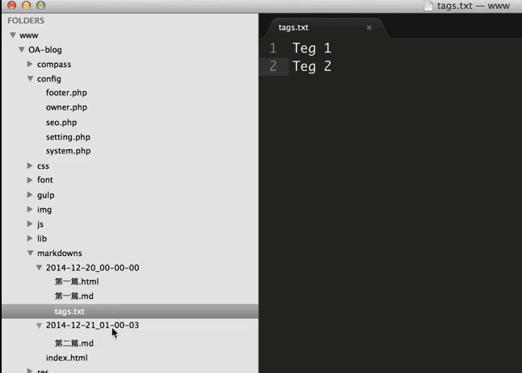
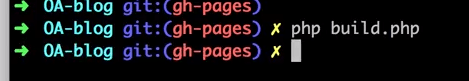
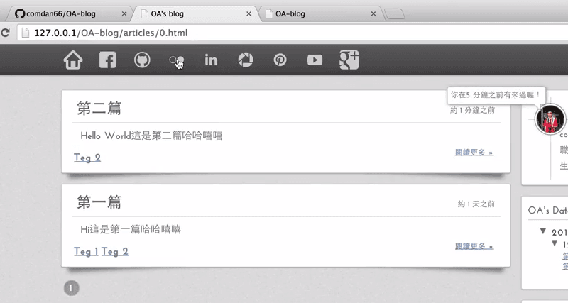

因為最近才知道 GitHub 有提供免費的 GitHub Pages 服務，所以就利用自己所會的工具(php、html、js、css)來做個玩具！那就是利用 GitHub Pages 來建置自己的部落格！！
若是我記得沒錯，市面上好像有很多很多大大做過一樣的東西(ex: octopress... 等)了，但身為程式人，就是要自己來做一個屬於自己的作品！
這項作品基本上被需要幾個條件，因為我是在 Mac 系統上開發的，而其他系統我沒測試，所以不敢說可用！而 Mac 上也要開啟 apache 以及 php 的功能。
P.S. 如果懶得看這些文字敘述的話..... 我也有製作了簡單的 Youtube Demo!
首先，先至我的 GitHub 將 OA-blog 這個 repository clone 下來！指令: git clone https://github.com/comdan66/OA-blog.git。
當 Clone 下來後，進入資料夾並且先變更資料夾權限，以便於 php 產生靜態頁面！如果要 push 到自己的 GitHub Pages 的話請記得更改自己的 git remote 後切換到自己的 gh-pages 的分支下！
完成以上步驟後，就可以開始新增文章啦！
預設的文章存放位置在 markdowns/ 下，基本上資料夾代表文章時間，其時間格式因為資料夾名稱不支援 : 的符號，所以這邊我定義格式為 yyyy-mm-dd_hh-ii-ss。

新增玩資料夾後，內便可以新增文章啦，首先建立一個 .md 的檔案並且開啟它，在 mac 系統上面開啟 .md 檔案的應用程式建議可以使用 mou，它是一個不錯的免費 markdown 應用程式！

當文章編輯完成後，將檔案匯出 .html，如果不想匯出 .html 的話可以更改 config/system.php 內的變數 $_format 的值，將其改成 .md 即可不用再匯出 .html。不過這邊建議使用 .html 格式比較保險 ：）

匯出後的 .html 就放在跟 .md 一樣的位置即可！ 其檔名就會是文章的標題！

同事在一樣的目錄下新增檔案名稱 tags.txt 的文字檔，就可以對此邊文章做設定標簽的功能！
每個標簽皆用段行分開即可！

完成文章新增、標籤設定後，就可以準備進入下一步驟啦！

這個步驟主要在產生 html 的文件，首先開啟終端機，並且在資料夾內輸入指令 php build.php，就可以產生出靜態 .html 頁面啦！

完成 build 後，就可開啟網址 http://127.0.0.1/OA-blog/ 後，就可以看到自己所建立的文章啦！

基本上整體程式作品大致上就是這樣一個 run，主要是興趣寫作啦，如果有興趣的各位，歡迎 clone 回去用吧 ：）